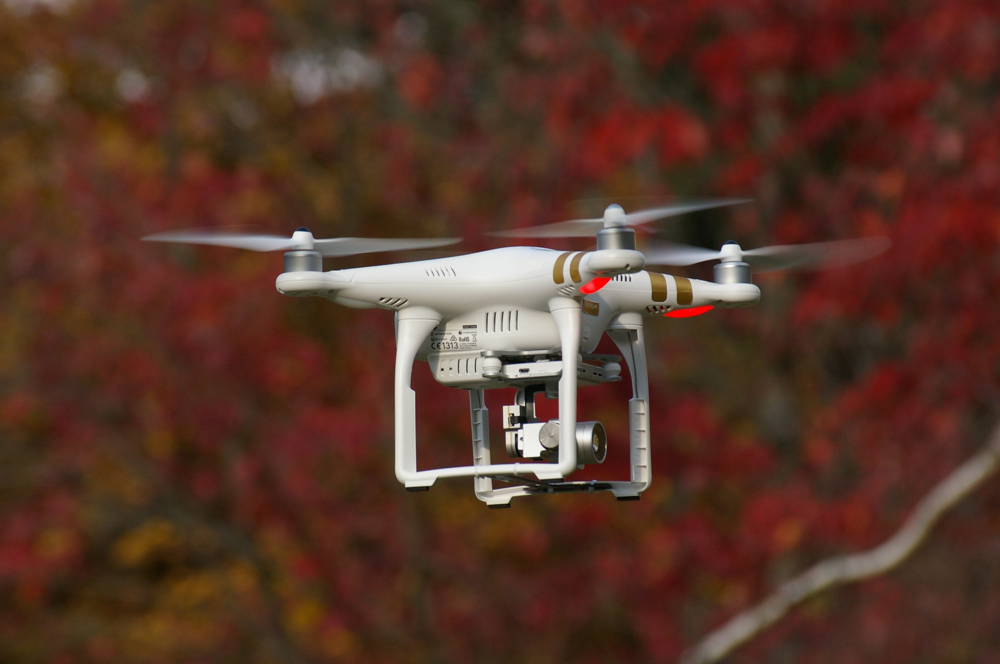

12 requerimientos que necesita el dron CLASE B para operar
Para que puedas trabajar con tu dron sin ningún problema técnico durante la operación, este debe estar en óptimas condiciones y cumplir con los requerimientos técnicos establecidos por la Aerocivil para los drones CLASE B.
Es vital que la aeronave cuente con:
- La estructura y sistemas de control de acuerdo con las especificaciones del fabricante.
- Su configuración original sin modificaciones ni alteraciones, a menos que sean aprobadas por el fabricante.
- Un sistema de control que no interfiera con otros equipos.
- Los manuales de operación y mantenimiento expedidos por el fabricante.
- Un sistema de piloto automático.
- Un sistema de navegación basada en satélites (GPS).
- Un sistema de recuperación (normal y de emergencia).
- Un color fácil de visualizar a distancia.
- Placa de identificación.
- Un MTOW (peso máximo de despegue) dentro de las especificaciones del fabricante y de la CLASE B.
- Iluminación adecuada para operaciones nocturnas (si se requiere).
- Sistema de sujeción de la carga útil previamente autorizado.
Recuerda que, además de tener que registrar tus drones ante la Aerocivil, también tienes que registrarte como piloto.